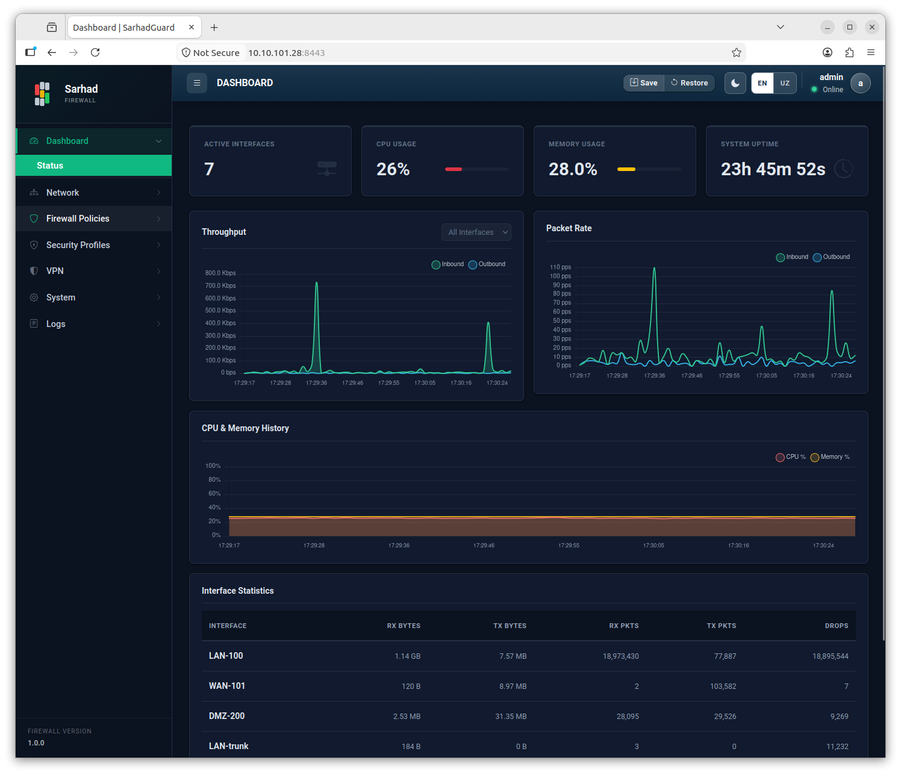

3. Dashboard oynasi
Tizimga muvaffaqiyatli kirgandan so’ng siz avtomatik ravishda Dashboard sahifasiga o’tasiz. Bu — boshqaruv panelining bosh sahifasi bo’lib, qurilmaning umumiy holatini va tarmoq faoliyatini bir qarashda ko’rish imkonini beradi. Sahifadagi ma’lumotlar real vaqtda, bir necha soniyada bir avtomatik yangilanib turadi.
{kind=link}

3.1. Statistika kartalari
Sahifaning yuqori qismida qurilmaning asosiy holati to’rtta karta ko’rinishida ko’rsatiladi:
Ko’rsatkich |
Nimani bildiradi |
|---|---|
Active Interfaces (Faol interfeyslar) |
Ayni paytda faol (UP holatdagi) tarmoq interfeyslari soni. |
CPU Usage (CPU yuki) |
Protsessorning band qilingan qismi (foizda). Doimiy yuqori qiymat qurilma chegaraga yaqinlashayotganini bildiradi. |
Memory Usage (Xotira) |
Ishlatilayotgan operativ xotira (RAM) miqdori. |
System Uptime (Ish vaqti) |
Qurilma so’nggi qayta yuklanishdan beri uzluksiz necha vaqtdan beri ishlayotgani. |
3.2. Interfeys grafiklari va statistikasi
Kartalardan pastda tarmoq trafigi ikki ko’rinishda taqdim etiladi.
Trafik grafiklari — interfeyslar bo’yicha trafikning vaqt davomida o’zgarishini ko’rsatadigan real vaqtdagi grafiklar. Ular orqali qaysi interfeys qancha yuklanganini va trafikdagi keskin o’zgarishlarni (masalan, kutilmagan portlashlarni) tezda payqash mumkin.
Interface Statistics jadvali — har bir interfeys uchun aniq raqamli ko’rsatkichlar:
Ustun |
Tavsifi |
|---|---|
RX Bytes / TX Bytes |
Qabul qilingan (RX) va yuborilgan (TX) ma’lumot hajmi (baytlarda). |
RX Pkts / TX Pkts |
Qabul qilingan va yuborilgan paketlar soni. |
Drops |
Tashlab yuborilgan (qabul qilinmagan) paketlar soni. Yuqori qiymat tarmoqda muammo borligidan dalolat berishi mumkin. |